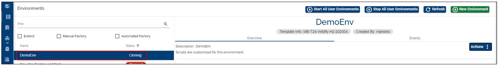

Note
With the 202103 release, the TCD user guide will move to the Temenos Customer Support Portal (TCSP). We recommend you to log in to TCSP and check if your credentials are available. Raise a ticket at CloudPlatformSupport@temenos.com if you encounter any issues.
Clone a Temenos Continuous Deployment environment
One of the features of the Temenos Platform is the possibility to create a clone of an environment.
In case different changes have been done such as: modifying the database, addition of new endpoints, installing plugins or others, and is needed a copy of that specific environment with all the changes, this can be easily done by clicking the clone button and creating a clone.
Please see below some explanations on how this process works and what are the restrictions during the cloning action.
Note
Check also our Video tutorial
Environment Status during Cloning
Note
You can not clone an environment if the environment is: Stopping, Rebuilding, Scaling, Exporting or it has a Warning.
You can clone an environment only when the status is Started/Starting > the Start button will be disabled.
Clone the Environment
On the environment screen click on Actions and select the Clone button from the drop-down.
Fill in the Name and Description. It is optional to add a Label.
Click Clone.
You will receive a notification on the screen that the environment cloning has been initiated.

Note
Use the Refresh List button in order to see the new actions.
- At this point, there will be created: a New address and a GitHub endpoint with the same content as the cloned one and also a cloned Database (the export of the database is triggered).
- The new (clone-environment) will have the same template as the source environment.
- In the Event Tab of the source Environment (the one being cloned), the Event notifications will display the date, time and duration of the Cloning action.
- The Clone button will be disabled until on the left side of the screen you will notice the new cloned environment being created.
- The new environment will be visible in the Environments list with the status Cloning:

- The target environment (clone) will display the status Creating for:
- T24 application
- H2 database
- GitHub repository
User Permissions Required
To be able to perform the above operations the below permissions need to be enabled for your user:
- CREATE _ ENVIRONMENT
- MANAGE _ ENVIRONMENTS
To have a better understanding of the user permissions, hover the cursor over the variables and a short description will pop up or click here to read more.